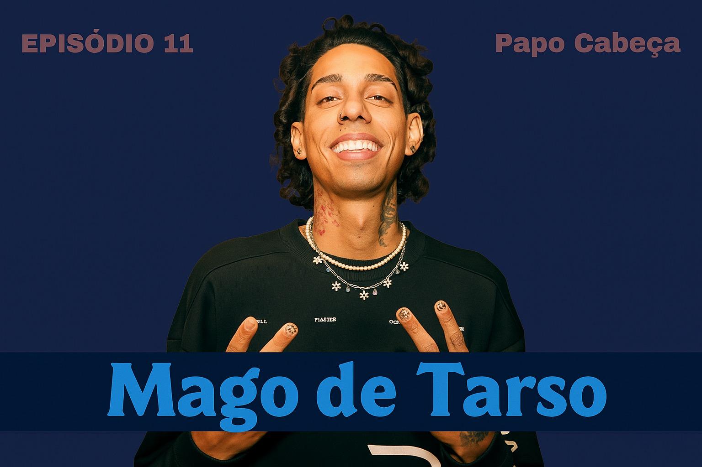

Bem-vindo ao Papo Cabeça, o podcast feito em Recife que une boas conversas, cultura e diversão! 🎙️ Aqui você encontra a programação da semana com todos os convidados especiais que vão agitar nossos episódios. Explore também os episódios passados, completos com sinopses e momentos imperdíveis. Além disso, confira nossos programas extras, como gincanas e desafios com convidados locais. Tudo isso com muito humor e o jeito recifense de bater um bom papo!
Recife é ritmo, é voz, é alma. Nosso podcast nasce do desejo de celebrar o que é nosso — as histórias, os sons, os talentos e as tradições que fazem da nossa cidade um caldeirão de cultura. Cada conversa é um mergulho nesse universo rico e pulsante, onde o novo e o ancestral se encontram e se reinventam. Exaltar Recife é dar voz à nossa gente e manter viva a chama que move essa terra criativa e única.
Próximos episódios...
Mago de Tarso
Na programação desta semana do Papo Cabeça, vem aí Mago de Tarso, o trapstar recifense que tá dominando as ruas e os beats! 🎤 Prepare-se para histórias dos bastidores, muita rima e aquele flow que só ele sabe entregar. Um episódio cheio de energia e humor que você não vai querer perder! 🔥
Programação completa na aba Programação Semanal
Episódios passados...
Alceu Valença

No episódio mais recente do Papo Cabeça, tivemos a honra de receber Alceu Valença, um verdadeiro ícone da música nordestina! 🌵✨ Entre causos, risadas e muita poesia, ele falou sobre suas inspirações, as histórias por trás de seus sucessos e a força cultural do nosso Nordeste. Ainda brincou dizendo que, se tivesse nascido na era dos streams, já teria lançado o "Morena Tropicana Sessions" direto do sertão! 🎸 Um papo leve, cheio de energia, ritmo e aquele encanto arretado que só Alceu tem! 💫
Chico Science

No último episódio do Papo Cabeça, tivemos a honra de receber Chico Science, um dos grandes nomes da música brasileira. Em uma conversa leve e inspiradora, ele contou um pouco sobre sua trajetória, as raízes do movimento manguebeat e como sua arte continua influenciando gerações.🌵🎶